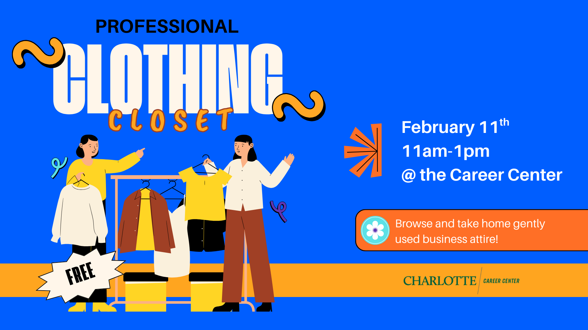

Student Storytelling Series
Created a repeatable storytelling format across social and web to highlight student experiences and connect their involvement to career development outcomes.
.png)

Multi-platform content + storytelling supporting campus events, collaborations, and student success initiatives.
I supported the Career Center’s marketing and content creation by developing short-form video, story graphics, blog features, and digital signage to promote events and highlight student experiences. Content was designed to align with timely campus needs while staying consistent and easy to understand at a glance.
Reels were built around high-relevance campus moments and paired with trend-friendly formats to increase discovery, engagement, and event awareness.
Created a repeatable storytelling format across social and web to highlight student experiences and connect their involvement to career development outcomes.
Designed bold, high-readability LCD graphics to promote Career Center resources and events across campus screens.
